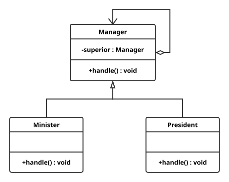

一个请求,沿链传递直到有一个Handler对象处理它.
注意: 一个请求极有可能到了链的末端都得不到处理,或者因为没有正确配置而得不到处理.这是很糟糕的
1 2 3 4 5 6 7 8 9 10 11 12 13 14 package chain.of.responsibility;public abstract class Manager protected Manager superior; public void setSuperior (Manager superior) this .superior = superior; } public abstract void handle (int money) }
1 2 3 4 5 6 7 8 9 10 11 12 13 14 15 16 17 18 package chain.of.responsibility;public class Minister extends Manager @Override public void handle (int money) if (money < 100 ) { System.out.println("ok, give you." ); } else { if (superior != null ) { superior.handle(money); } } } }
1 2 3 4 5 6 7 8 9 10 11 12 package chain.of.responsibility;public class President extends Manager @Override public void handle (int money) System.out.println("没有我管不了,OK." ); } }
1 2 3 4 5 6 7 8 9 10 11 12 13 14 15 16 17 18 package chain.of.responsibility;public class Main public static void main (String[] args) Minister minister = new Minister(); President president = new President(); minister.setSuperior(president); int [] money = {10 , 20 , 120 }; for (int m : money) { minister.handle(m); } } }
